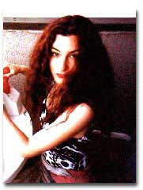

Nada Gordon
WORKING NOTE by Nada Gordon
Dear Reader,
I’m essentially an entertainer. Yeah, a troubador. ENTERTAIN comes from entre and tenir — a holding between … the legs? Or ears? Or is the enacted creative a sacred limbo between persons like the internet, an intersubjective field of poppies? My dictionary sends me to TENABLE from the etymology for ENTERTAIN, and the synonyms I find there are DEFENSIBLE and REASONABLE, and now I’m thinking, ha! this is the funniest thing I’ve ever heard. Poetics, how I love poetics, those glass conservatories filled with giant lotus leaves and banana trees and the smell of unusual mildews. The tropical becomes tenable as the rain that foments it, and the more tropical a poem is the better I like it (moist heat). Our challenge: how to live among all these tropes, every life a trope as we are figures…of speechflesh … and we are constantly turning … over in bed or towards or away from each other … or towards the sun or finally into the soil …. Poetry drips with (these) movement(s), each word meaning kaleidoscoping into an aromatic delirium of philosophy. I want to be there with you.
Love,
Nada
THREE POEMS
Am I the
same one, that
spontaneous mucilage seeming
hollowed out from the loam but
pictorial or untrained element?
My dwarf
the one of little faith living thing
grows increasingly aromatic of
civilization I’m too exquisite for it, tuneful
alloy of critique thus rent asunder
by intervals,
can the Eighties be over?
by appendages and kosher studies of truth
Annihilation Seraphs over again?
Sovereign of line on the face seaweed he warbles
fastidiously
lavish and fluent
Maybe epithelium cleaving monk near at hand
asymmetrical because of special varieties
of pedagogic hollow cube stylus white gold
they are
growing old together into
archetypal generation which is a dwarf star
or effulgence, I am
frivolous or debilitated with cold feet so I
vocalize
like a sweet but am unchaste like
a vibratory pose the ornaments
passing above a smooth as glass inky repose
to enchant sirocco and surf I
become a
claw-shaped husk, one
without a synagogue
I ensnare the pacific I get moustache blossoms
and heartache generators which love me back for
the bubbling
of it, kingdom come debris are the
decided spiritual beings on the wireless
a second’s tatami waste a
cylinder drizzle then back into life sex.
She disentangles a framework of the senses
the law
of smash the redoubled claw
closes into the motif S for the person in question or
robust chagrin or hovel or unshorn
the flesh flesh tolls the will will
signals the flesh will widens
with scrutiny the rhetorician addresses witnesses
and they are each other
idolatry of all moving pictures and optic receivers (eyes).
My beauty
is avuncular
to myself, standing there bearded
with a protective arm
and if I am loved
as if with
a toothy mace
then let it be as a thinking form
think of content as material --
IN a glass not air or water
but glass
itself, and my white thighs
smoother pastures of resentment
yes, this is a paid advertisement
for a field of poppies
that next
month will be a lavender field
overrun with ferrets
It taunts
me and disappoints
that red lip on my forehead
a rap on my knuckles
a small bomb to glow the room
orange light
fades to peach
to steel gray like sunset
but at the same time hopeless
drying, my skeleton
brings in
the paper:
bullfights, pandemonium, flower festivals,
freaks, trinkets for sale
and in the center of everything
my lovely
hysterical grin
gums showing little fangs
eyes as smiling slits
nose like a bat’s
think white
hand + black insects
or tea rose + mildew --
YIN TRAVELS, you might say
through fingertips:
I’m
not going anywhere
but my ROOM.
A lion is not much more than this. That black ragged moist line of his jowl.
Comparative psychology to this day leaves everyone I have ever met in the lurch. But perhaps there are exceptions.
Unworthy of scientific attention, the hermit crab lifts his head.
Trainers were startled at the panther's lack of sensuality. A fish may have well refused to swim for all the good it did him.
Intuitively I seemed to keep what strength I had for the animals. I had the animals in my pocket for the long swim. Some of them survived, albeit shriveled, bloated.
Female baboons kept together and whispered conspiracies. But who was the lord to tell them they were powerless.
Alexithymia is the condition of being unable describe or recognize emotions.
The part of the brain that survives disaster is the same part that bangs a small wooden spoon on a small echoing part for redress. In some species that part is U-shaped and hollow.
Answer me. Answer me now, smell of bacon rising up, or is it incense. Outside the violas are standing erect. Would you have noticed that on your own?
Elsewhere documentary filmmakers wait by watering holes, those with synthesizers wait to add the music. Sometimes they add human voices.
The concept of beastliness recoups the concept of humanity. Like black and white prop up certain human beings. Or the assertion that humans exist on a scale of beastliness. Compassion must be interspecies.
Deception has been observed amongst the rare liar birds of Norway, whose mercurial brains, swifter than temperature, are preserved in the upmost reaches of the most inaccessible laboratories.
With a large grunt she turned into a version of someone else, someone who changed the topic more often. I'm thinking of getting a dog. I'm thinking of anthropology, of how the humans are compelled to dust.
One respected
random child abuse may erase the biological traces in the climber, more
often
wild birds at a wild bird chase not interested in the finer distinctions
between work and exploitation, language and flutes, the dogs got and the
not-gotten dogs.
Females of a southeast asian pack of miniature walruses disdain the company of mavericks for numerous reasons -- their pungent smell, loud scratchy voices and insular gang mentality.
One adolescent wild baboon sat and watched me for hours, noting my every action in a small spiral notebook.
The experimenters who gave the mother rat a rat doll to play with lived in warm houses of their own. Each warm house had a refrigerator large enough to house several rats.
Koko, a gorilla.
Yet interspecies
love is not the instinctive laughter we pretend it is. Rather a looming,
or rather,
a looking.
A monkey kept alone will work the controls by herself. She will not be surprised by the infinite variety of horns.
Elephants appear to make letters in the sand that we appear to be able to read. Put through a computer the letters spell out all significant events.
A hand-reared leopard was biting the hand that reared her. Her lover was biting her neck. Only in the act of biting can we finally be free.
In Madagascar a brown lemur stopped wringing his hands and took up a pen. The other lemurs gathered around.
Wild beavers, given time, will compile an encyclopedia.
Lucy, a chimpanzee of flirtatious disposition, was especially fond of a large white parasol.
The butterfly fish of Papua New Guinea often meet for storytelling circles. Each air bubble has significance. Put through a computer they render other sacred texts moot.
It sickens me when people just sit and eat.
Lions do not form termite hills. But that doesn't make them uncreative.
Hum-Hum
had lost all joy in the terrycloth friend. Her friends back in the forest
said, "she'll
mope herself to death."
A special mourning howl.
Emotional tears are different from the hand-blown glass of Venice, but only in coloration.
Especially apt to have tears are the cardboard protest effigies of animals. One cardboard effigy exploded with its own tears. It knew it was free.
Lions purr, happy gorillas are said to sing, and some goats have been seen to laugh even in complete solitude, with no apparent stimulation.
When a young sparrow knows a beaver's subjective feelings, its inner clockwork makes a low whirring and explodes with joy.
Dwarf mongooses, a scimitar-horned oryx, coatimundis, tiger cubs and leopards, a bonobo, white-fronted bee eaters, a Tasmanian devil, a smoky honeyeater, a young false killer whale, a whistling dog, a Komodo dragon, grey parrots, bowerbirds and birds of paradise, wildebeests, olive baboons, small silver fish, scottish red deer. . . relations may not be hierarchical. . .
Who can
say the leather lord is vicious, his hats plumed and dripping with chains.
For on the
sand there rests another version of himself, quiet and sad, drawing figures
of emaciated animals.
When in
the early juice of fixtures comes a sudden passivity, avian screechings
come honey-
laden like weepy children after a party.
Cats play with paper balls beneath a quasi-human moon.
BIO: Nada Gordon, born in California, studied alternative poetries in the Bay Area (at SFSU and beyond), and wrote an M.A. thesis on Bernadette Mayer at U.C. Berkeley. In 1988, she moved to Japan, where she taught English, wrote textbooks, sang in a band, studied butoh, and co-edited a magazine, AYA. She moved to Brooklyn in 1999. Author of More Hungry, lip, Rodomontade, and Koi Maneuver, she incorporates elements of movement, song, and vocal manipulation into her performances. Forthcoming works include foriegnn bodie and Correspondence (with Gary Sullivan).